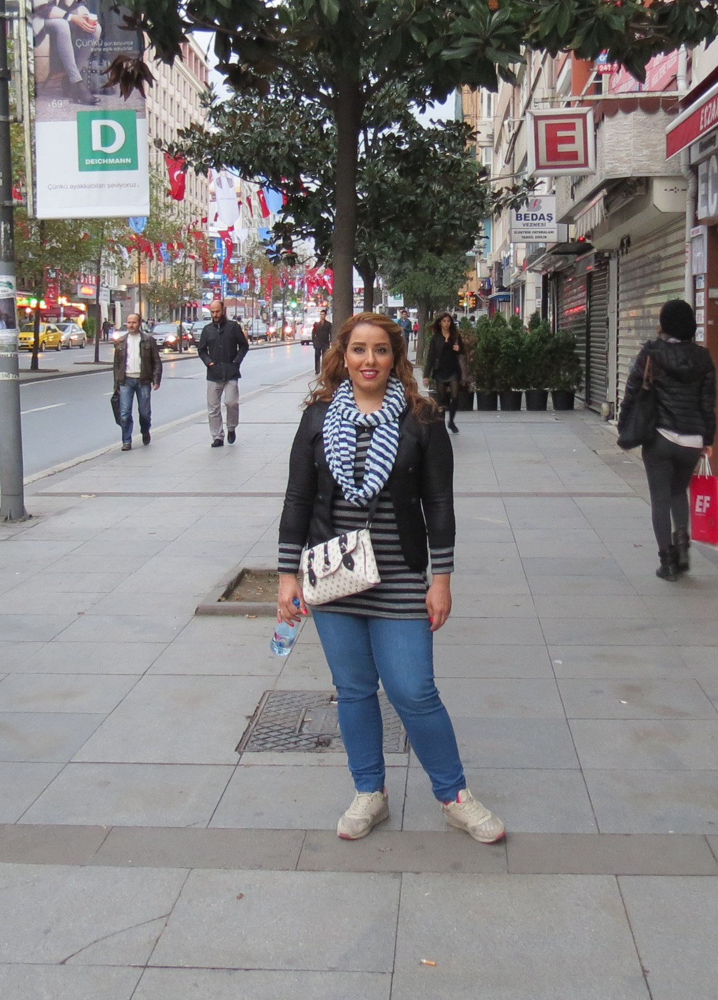

Curriculum Vitae
Education:
• Master student: Geomatics, university of Calgary (2021-now)
• Master: urban management, science and research branch of AZAD University of Tehran.
(2015‐2018) GRA A.
Thesis subject: locating crisis management stations by using ARC GIS with grade A.
Supervisor: professor seyed Ali Ebadi Nejad
• Bachelor: survey engineering, Shahid rajayie university of Tehran. (2008‐2010) GRA B
Thesis subject: The usage of permanent GPS stations in earthquake. With grade A.
Supervisor: Professor Mirahmad Mirghasem pour
• Associate Degree: photogrammetry , Institute of surveying and Mapping of geographical
organization of Iran .(2004‐2006) GRA B
Publications:
capability poverty approach in urban development strategy studies in first
international conference on urban economics (March 2016)
Supervisor: Dr Mohamad javad Salehi
Employment history:
• Apprepenciship in geographical organization of Iran (2006), working on:
creating Topographic maps from aerial photographs with Inpho software
Drawing the contour lines and preparing the elevation maps with Inpho software
adapting local maps to global coordinate system (UTM) and transfer data to ARC GIS
software
• Survey expert in Kheizaran consulting engineering (2011‐2012) full time, working on:
• Survey expert in support and training department in Geobite (Leica geosystemes
representative in Iran) (2012‐2020) full time
• Shareholder of Arad Geo Based Information Technology Company (ARGETEC) Which was
an informal consultant in many projects (2018‐ now).
Software Skills:
Photogrammetry softwares: Photomod, Paradise, LPS, Inpho
Surveying softwares: AutoCAD, Civil 3D, SDR Map, AutoCAD Land Desktop
GIS (geographic information system) software: ARC GIS
Microsoft office (word, power point, excel…)
Instrumental skills:
Survey instruments: total stations (Leica TS series), levelers (Leica sprinter series)
GPS (global positioning system) instruments: Leica GNSS Receivers (GS10, GS14, GS16…)
English skills:
IELTS, overall band score 7